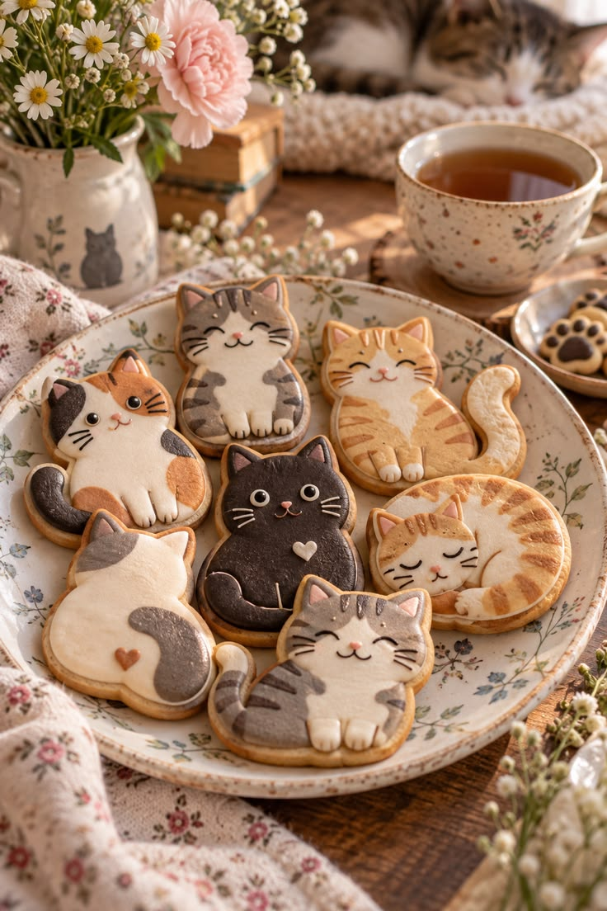
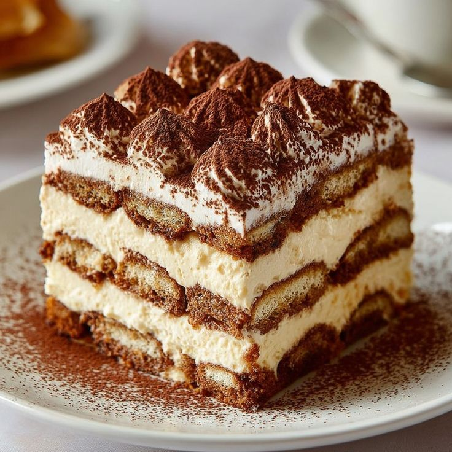
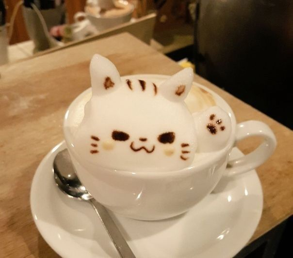
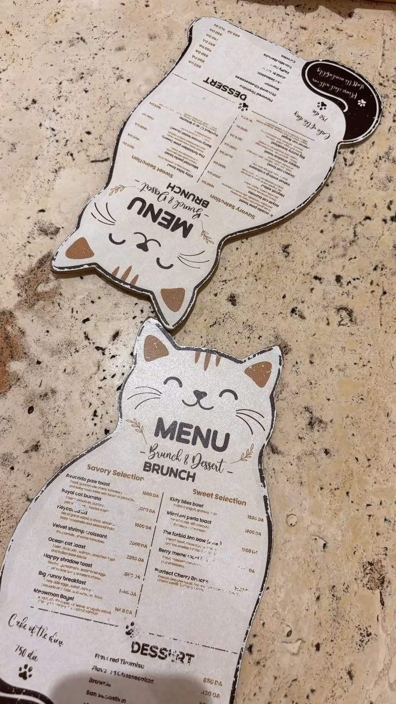

¡Las mejores ideas y las grandes conversaciones siempre empiezan con una buena taza de café!
Destacados

Nuestras galletas artesanales de gatitos son las favoritas de la casa. Horneadas diariamente con glaseado hecho a mano, ofrecen el equilibrio perfecto entre dulzura y crocancia. Ideales para acompañar tu infusión preferida.
Nuestro cappuccino especial con arte latte de gatito y corazón es la estrella de la carta. Preparado con café de especialidad y leche cremosa dibujada a mano, conquista a primera vista antes de enamorarte en cada sorbo.

Nuestro tiramisú artesanal es el broche de oro ideal para tu visita. Preparado con suaves capas de crema mascarpone, vainillas bañadas en espresso intenso y cacao amargo espolvoreado, conquista cada paladar.
El arte latte con diseños de gatitos se vuelve tendencia en nuestra cafetería local. Los baristas sorprenden cada mañana con tiernas figuras dibujadas en la espuma, conquistando a los clientes que buscan una experiencia única.
El arte latte en 3D llega a nuestro menú con adorables gatitos esculpidos en espuma. Cada taza se convierte en una dulce obra de arte que te saluda con su patita antes del primer sorbo. ¡Ven a probar esta nueva experiencia!


Sobre nosotros
En nuestra cafetería, cada taza es una pausa pensada para disfrutar. Preparamos cafés con diseños únicos de gatitos en espuma, acompañados de galletas temáticas y nuestro clásico tiramisú artesanal hecho cada mañana.
 Instagram
Facebook
TikTok
Instagram
Facebook
TikTok